Age Ad_Spend Clicks Purchases Revenue
Min. :18.00 Min. : 1.83 Min. : 0.00 Min. : 0.000 Min. : 0.00
1st Qu.:31.00 1st Qu.: 96.86 1st Qu.: 10.00 1st Qu.: 0.000 1st Qu.: 0.00
Median :43.00 Median : 172.25 Median : 19.00 Median : 1.000 Median : 26.86
Mean :42.51 Mean : 216.78 Mean : 24.17 Mean : 1.047 Mean : 41.21
3rd Qu.:54.00 3rd Qu.: 278.74 3rd Qu.: 32.00 3rd Qu.: 2.000 3rd Qu.: 61.28
Max. :65.00 Max. :3875.35 Max. :322.00 Max. :17.000 Max. :702.61 Exploratory Data Analysis: Covariation
MKT 566 · Fall 2026
Davide Proserpio
USC Marshall School of Business
Before We Start
Housekeeping
- Homework 1 is due Monday, Sept. 14, on Brightspace. Same format as the case: an R Markdown report knitted to HTML, plus
ai-log.md - Groups: be in a group by Tuesday, Sept. 15. Add yours to the sign-up sheet
- Today: the solution of the variation case, then covariation
- Thursday and next Tuesday: the RateBeer case (bring your laptop)
“Am I actually learning anything?”
A common feeling in the first weeks of working this way: the AI writes code you have never seen, you run it, and a chart appears. It feels like magic, not learning. That feeling is normal, and it is not a sign that something is wrong.
What this course does not teach
- Writing R code from memory
- Knowing every R function
The AI does that, better than any of us.
What it does teach (and grade)
- Choosing the right chart or analysis for the question
- Asking for it clearly
- Reading the result: does it make sense? what does it say?
- Concluding: what does it mean for the marketing decision?
Running code you could not write yourself is the point, not a problem. The skill is to read it and judge the result. It takes a few weeks, and the two habits on the next slide speed it up.
Two habits, starting this week
1. Predict before you run
Before you make the chart, write one sentence: “I expect Search to have the most customers.”
Then look. Were you right? If not, is it the data or the code?
Without a guess, every chart looks “fine” and you learn nothing.
2. Explain it back
After the chart works, pick the one line of code that does the work. Say in your own words what it does.
Stuck? Ask the AI: “Explain this line as if I have never coded.” Then say it back in your words.
If you can explain it, you understand it.
Our next in-class exercise (the RateBeer case, Thursday) has a short box for both under every task. This is the part of the report that shows you did the thinking.
Reading ggplot: five pieces, every time
Every chart the AI writes has the same structure:
geom_point= scatter,geom_col/geom_bar= bars,geom_histogram,geom_boxplot,geom_line,geom_tile= heatmap- Everything after
labs()is style (theme_minimal(), colors, scales)
You do not need to write this. You need to recognize it. Then, when the AI uses a geom_ you did not ask for, or puts the wrong column on x, you will notice.
The Variation Case: Debrief
Tasks 1–2: what is a row, and what do the summaries say?
One row = one customer. What did you conclude from this table?
Tasks 1–2: reading it
Age Ad_Spend Clicks Purchases Revenue
Min. :18.00 Min. : 1.83 Min. : 0.00 Min. : 0.000 Min. : 0.00
1st Qu.:31.00 1st Qu.: 96.86 1st Qu.: 10.00 1st Qu.: 0.000 1st Qu.: 0.00
Median :43.00 Median : 172.25 Median : 19.00 Median : 1.000 Median : 26.86
Mean :42.51 Mean : 216.78 Mean : 24.17 Mean : 1.047 Mean : 41.21
3rd Qu.:54.00 3rd Qu.: 278.74 3rd Qu.: 32.00 3rd Qu.: 2.000 3rd Qu.: 61.28
Max. :65.00 Max. :3875.35 Max. :322.00 Max. :17.000 Max. :702.61 - No missing values (there would be an
NA'srow) Ad_Spend: mean 217, median 172. When the mean is above the median, there is a right tail: a few customers get much more spendPurchases: median 1, max 7. Most customers buy once or never
Task 3: the distribution of ad spend
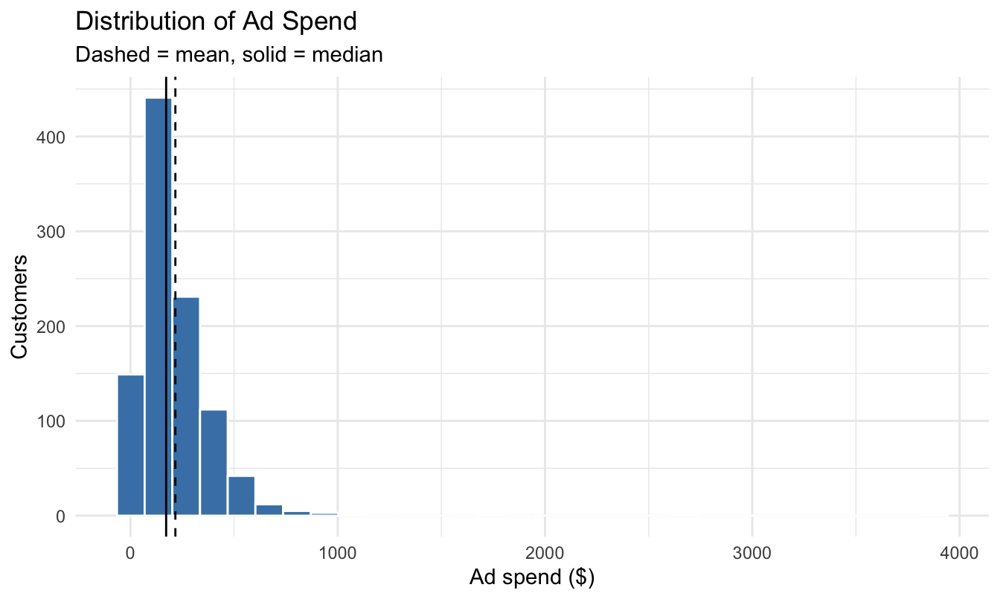
What shape is this, and what marketing strategy could produce it?
Task 3: reading it

- Right-skewed: the mean is to the right of the median, as the summary table suggested
- A likely strategy: a basic spend on everyone, plus extra budget on a few customers the firm thinks are high-value (retargeting, lookalike audiences)
Task 4: the same chart on a log scale

What can you see now that was invisible before?
Task 4: reading it
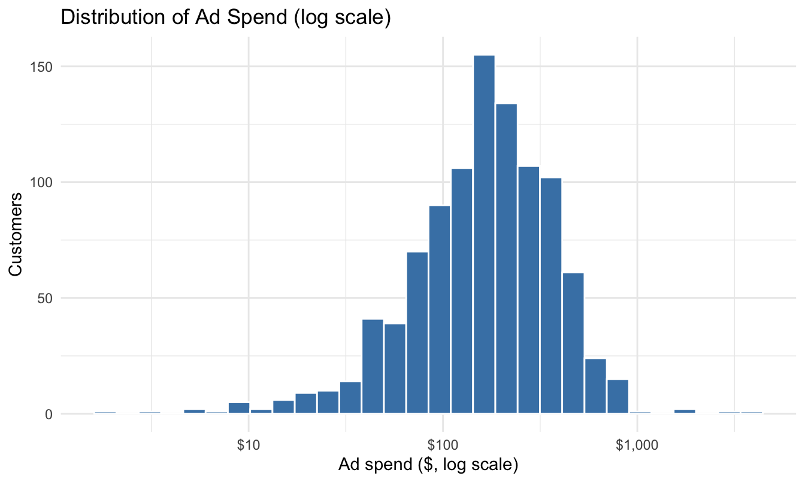
- On the log scale the distribution is roughly symmetric. The “typical” customer is easy to see: $150–200
- The low-spend customers were all piled up on the left before. Now they are spread out. Logs stretch small values and squeeze large ones
Task 5: the channel mix
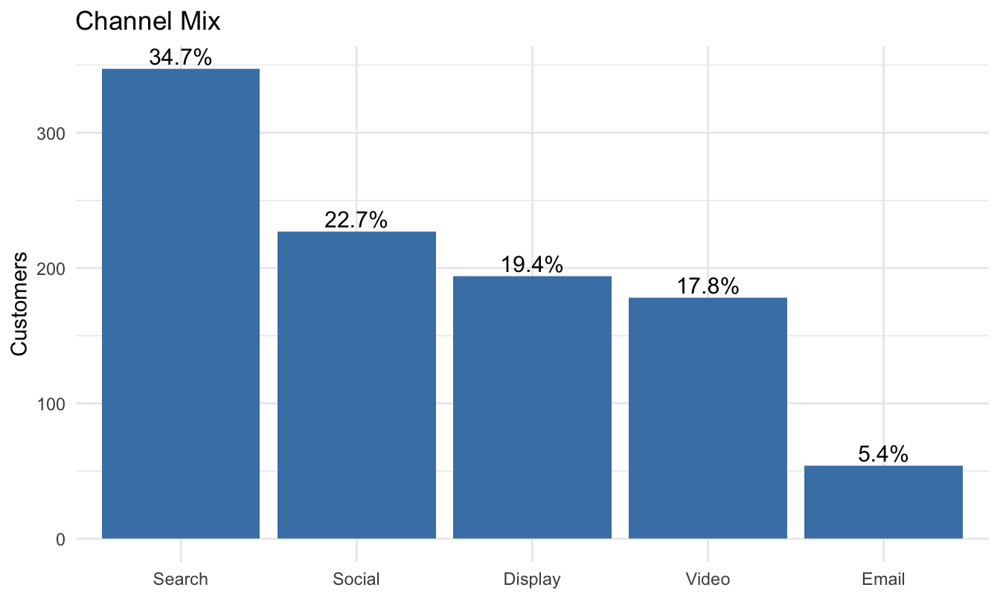
Balanced? Does the mix make sense for an online retailer?
Task 5: reading it

- Not balanced: Search is a third of customers, Email one in twenty
- It makes sense: search reaches customers who already want to buy, social and display find new customers, and email only reaches customers the firm already knows
Task 6: hunting outliers
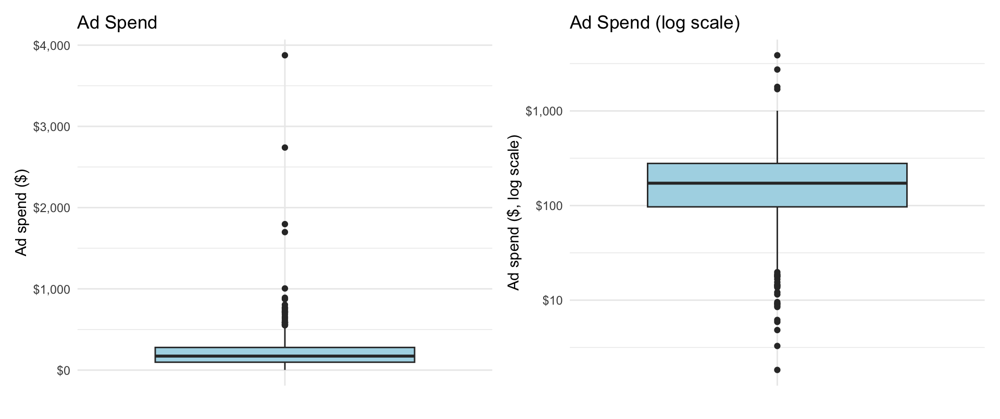
How many outliers, on which side, and should we drop them?
Task 6: reading it

- The 1.5 × IQR rule flags 39 customers, all on the high side. On the log scale only a few remain. Most “outliers” are just the tail of a skewed distribution, not errors
- Do not drop them without a reason. Run later analyses with and without them, say what you did, and prefer medians to means
Task 7: your own question (two examples)
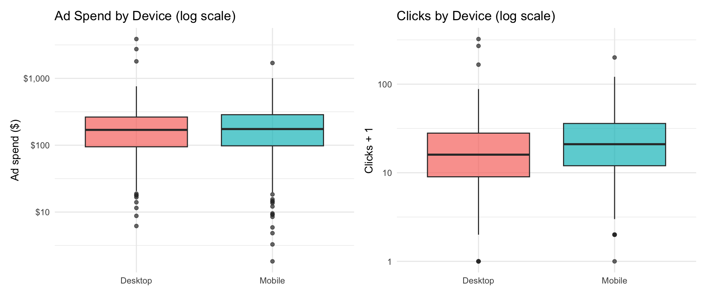
Same two groups, two different variables, both on a log scale. What is different between the two panels?
Task 7: reading it
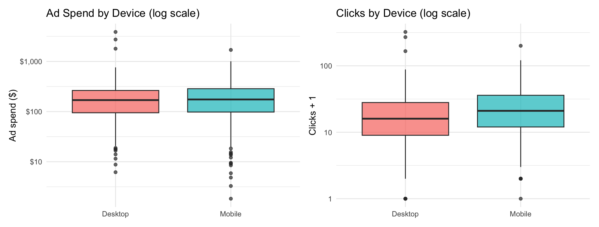
- Spend is the same on both devices; clicks are higher on mobile. The firm spends the same but gets more clicks on mobile
- Why “clicks + 1”? Six customers have zero clicks, and the log of zero does not exist. Adding 1 keeps them on the chart
What a strong answer looks like
The question (Task 3): Is the distribution of ad spend symmetric or skewed? What does the mean vs. the median tell you? What marketing strategy might create this shape?
Weak
“The distribution of ad spend is right-skewed. There are some outliers.”
True, but it is just a caption. No numbers, no why, no so what.
Strong
“Right-skewed: the median customer gets $172 but the mean is $217, so a few customers get several times the typical spend. The 39 outliers are all high-spend. That looks like a retargeting budget focused on a few customers, not a data error, so I would keep them and report medians.”
The recipe: the pattern → the number that shows it → the marketing reason → what you would do. Four steps, three sentences.
Full instructor solution: w2-1-variation-case-solution.html
R script for today
In the code/ folder on the course website:
w3-1-eda-covariation-class.R: reproduces every chart in the rest of today’s deck, with a comment above each onedata/marketing_eda.csv: the week 2 case dataset, which we use again today
Download everything as one zip: w3-code.zip, open the folder in VS Code, and run along.
The debrief charts you just saw are in the variation case solution.
Covariation
The two questions of EDA
Last week’s framing, one more time:
- What type of variation occurs within my variables? (last week)
- What type of covariation occurs between my variables? (today)
- Variation: one variable at a time (its distribution, its trend)
- Covariation: two or more variables, and how they change together
What is covariation?
Covariation is when two or more variables change together in a related way.
- The best way to see it is to plot the relationship between the variables
- Which plot to use depends, again, on the type of variables
- Most marketing questions are covariation questions: does spend increase sales? do mobile users buy more? which channel converts best?
Which chart for which pair
| Pair of variables | Chart |
|---|---|
| Continuous × continuous (spend, sales) | Scatter plot (+ fitted line), correlation |
| Categorical × continuous (channel, purchases) | Bars of averages with error bars; boxplots by group |
| Categorical × categorical (channel, device) | Count table, heatmap |
| Anything × time | Line chart, one line per group |
Use this table when you write prompts: name the pair of variables, and you know what chart to ask for.
Two Continuous Variables
The marketing dataset again
Two hundred campaigns, ad spend on three channels, and sales:
youtube facebook newspaper sales total_ad_spend
<num> <num> <num> <num> <num>
1: 276.12 45.36 83.04 26.52 404.52
2: 53.40 47.16 54.12 12.48 154.68
3: 20.64 55.08 83.16 11.16 158.88
4: 181.80 49.56 70.20 22.20 301.56
5: 216.96 12.96 70.08 15.48 300.00
6: 10.44 58.68 90.00 8.64 159.12How would you visualize sales against ad spend?
Sales vs. total ad spend
marketing$total_ad_spend <-
marketing$youtube + marketing$facebook + marketing$newspaper
ggplot(marketing, aes(x = total_ad_spend, y = sales)) +
geom_point(alpha = 0.6, color = "darkgreen") +
geom_smooth(method = "lm", se = FALSE) +
labs(title = "Sales vs. Total Ad Spend",
x = "Total ad spend (thousands $)",
y = "Sales (thousands of units)") +
theme_minimal()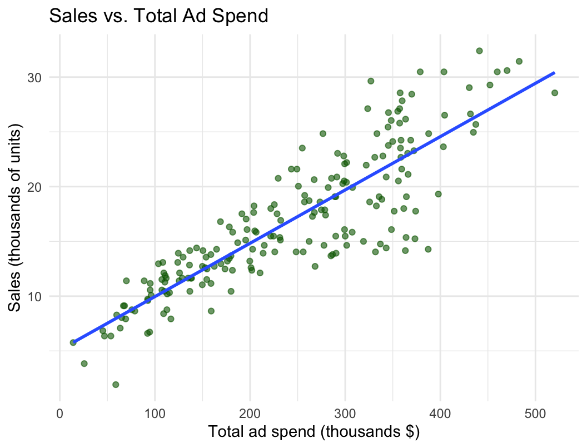
Each point is one campaign. What do you see?
Sales vs. total ad spend: reading it
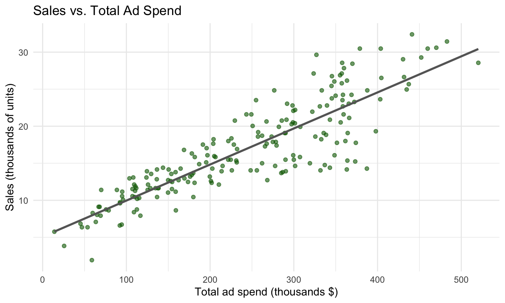
- A clear positive relationship: campaigns that spend more sell more
- Roughly a straight line, with a few high-spend campaigns that sold little
- The fitted line (
geom_smooth(method = "lm")) is a preview of next week: regression
Can we do a more informative viz?
marketing_long <- pivot_longer(marketing,
cols = c(youtube, facebook, newspaper),
names_to = "channel",
values_to = "ad_spend")
ggplot(marketing_long,
aes(ad_spend, sales, color = channel)) +
geom_point(alpha = 0.6) +
geom_smooth(method = "lm", se = FALSE) +
facet_wrap(~channel, scales = "free_x") +
labs(title = "Sales vs. Spend by Channel",
x = "Ad spend (thousands $)",
y = "Sales") +
theme_minimal() +
theme(legend.position = "none")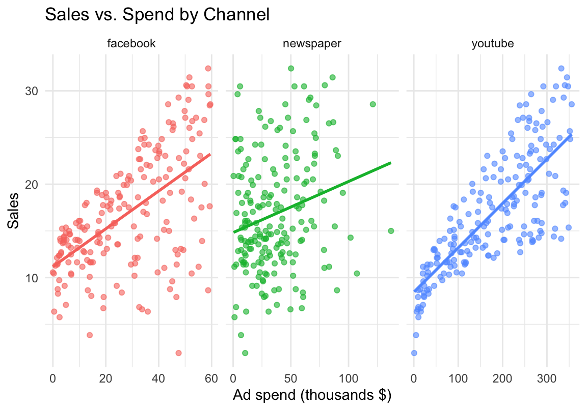
Same 200 campaigns, one panel per channel. What changed?
One panel per channel: reading it
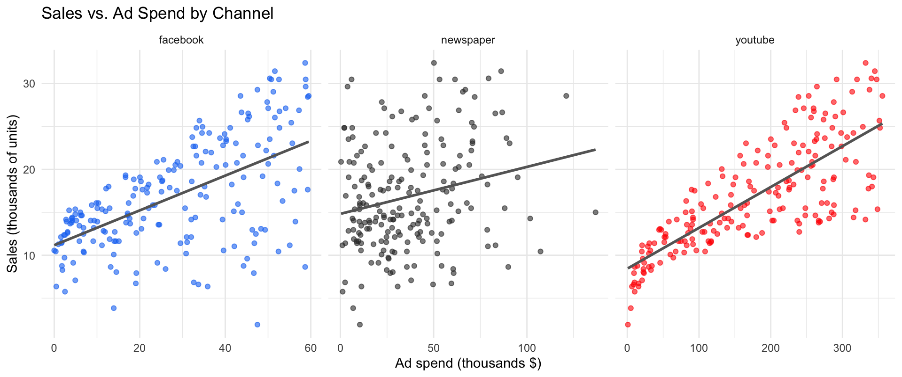
- YouTube: strong, tight relationship. Facebook: positive but noisier. Newspaper: almost flat
- The total-spend chart hid this difference. Splitting a chart by a categorical variable (
facet_wrap) is the most useful move in EDA
Correlation: the relationship as one number
The correlation coefficient \(r\) measures how close two variables are to a straight-line relationship, from −1 (perfect negative) through 0 (none) to +1 (perfect positive):
[1] 0.8677123[1] 0.7822244[1] 0.5762226[1] 0.228299- Same ranking as the panels: YouTube (0.78), Facebook (0.58), Newspaper (0.23)
One number hides a lot. Anscombe’s quartet is the classic example: four datasets with the same means, the same \(r = 0.82\), and the same fitted line, and four completely different pictures. Plot first, then summarize.
Overplotting: when you have too many points
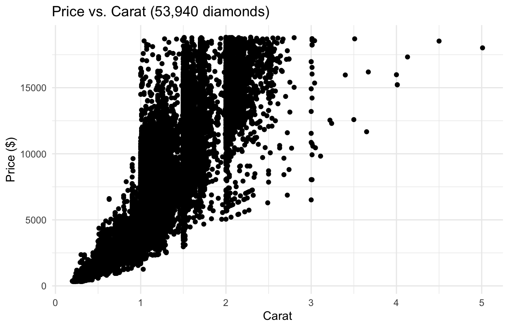
ggplot2’s diamonds dataset, 53,940 rows. What is the problem with this chart?
Overplotting: two fixes
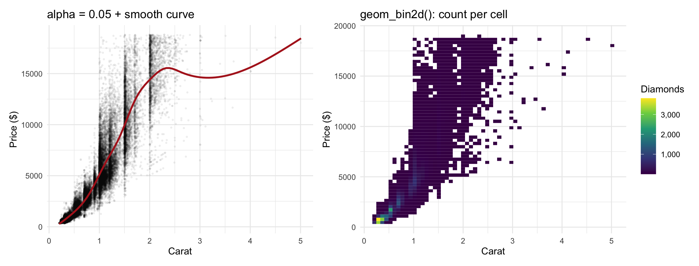
- Transparency (
alpha) + a smooth curve shows where most points are and the curved shape of the relationship - 2D bins (
geom_bin2d) count the points in each cell: a heatmap. Use either one when a scatter plot turns into a blob (RateBeer: 290,000 reviews)
One Categorical and One Continuous Variable
Back to the case data
CustomerID Age Gender Device Channel Ad_Spend Clicks Purchases Revenue
1 1 54 M Mobile Social 718.60 95 6 149.16
2 2 18 F Mobile Search 233.00 34 1 22.22
3 3 42 F Mobile Search 122.51 18 0 0.00
4 4 27 F Desktop Social 198.78 19 1 13.22
5 5 53 F Mobile Social 145.19 19 4 150.48
6 6 35 M Desktop Video 125.74 9 0 0.00Which chart would you use to explore purchases by gender?
Purchases by gender
avg_gender <- df %>%
group_by(Gender) %>%
summarise(avg_purchases = mean(Purchases),
se_purchases = sd(Purchases) / sqrt(n()))
ggplot(avg_gender, aes(x = Gender, y = avg_purchases, fill = Gender)) +
geom_col(width = 0.6) +
scale_fill_manual(values = c(F = "#E07A5F", M = "#3D5A80")) +
labs(title = "Average Purchases by Gender",
x = NULL, y = "Average purchases") +
theme_minimal() + theme(legend.position = "none")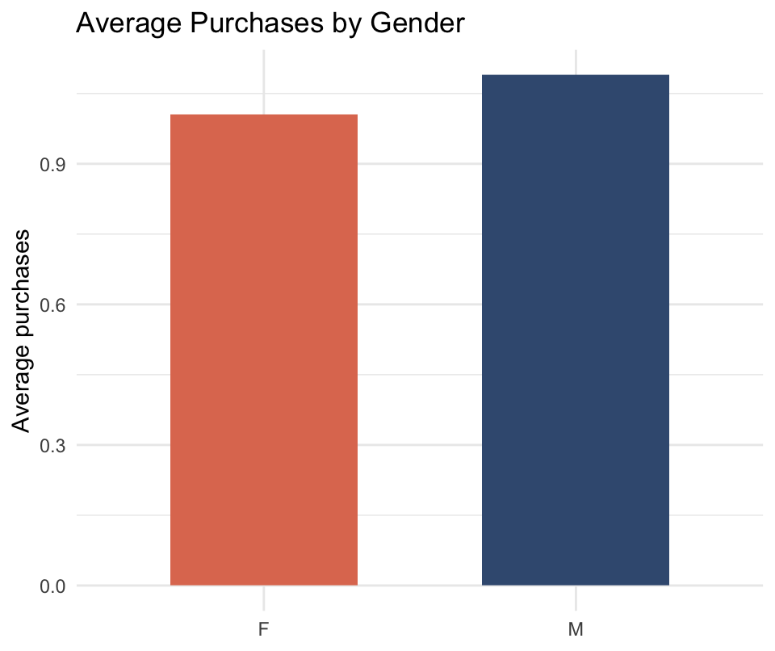
First summarize (one row per group), then chart the summary. What do you conclude?
Purchases by gender: reading it
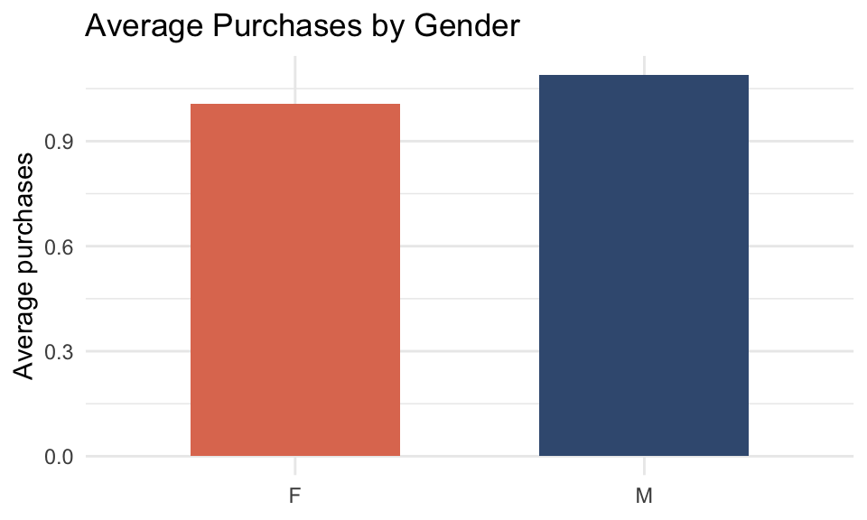
- Men average 1.09 purchases, women 1.01. Is the difference real, or would another 1,000 customers flip it?
- The bars cannot tell you. We need to know how precise each average is
Add error bars
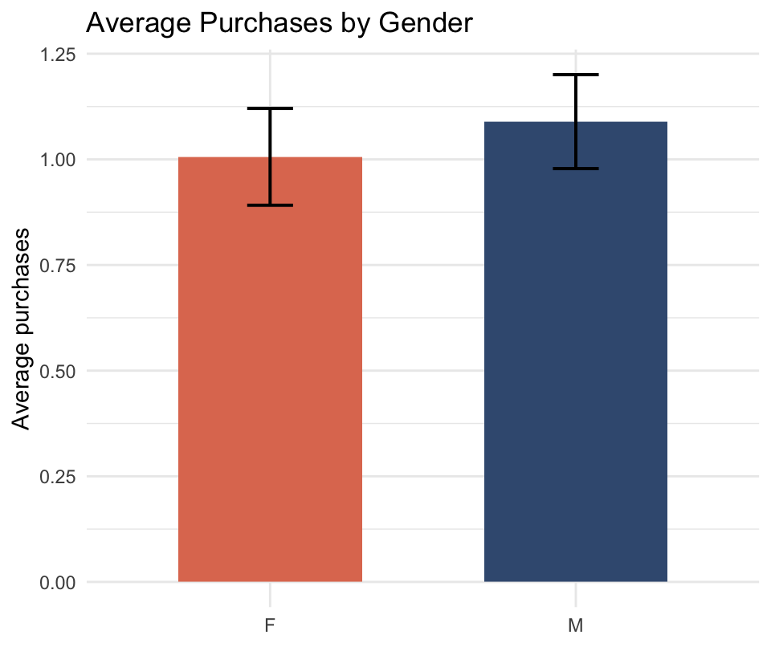
The standard error, \(SE = sd / \sqrt{n}\), tells us how precise the average is. Mean ± 1.96 × SE is a 95% confidence interval: the range where the true average most likely is. Now what do you conclude?
Error bars: reading it

- The two intervals overlap a lot: the data cannot tell men and women apart on purchases
- Rule of thumb: bars of averages without error bars make small differences look real. Always ask for error bars
Add a third variable: the ad channel
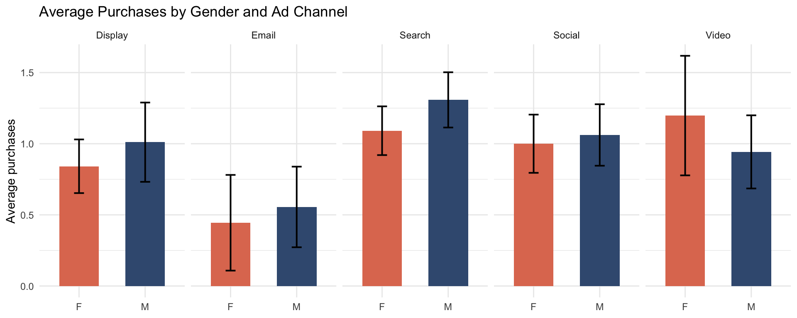
facet_wrap(~Channel) again. What do you see now?
Gender × channel: reading it

- The gap changes by channel: men buy more via Search (1.31 vs. 1.09), women via Video (1.20 vs. 0.94)
- Email has the widest error bars: only 54 customers. Small group, wide interval. Always check how many people are behind a bar
Averages hide distributions

One boxplot per group, sorted by median. Do the channels differ, and how?
Boxplots by group: reading it
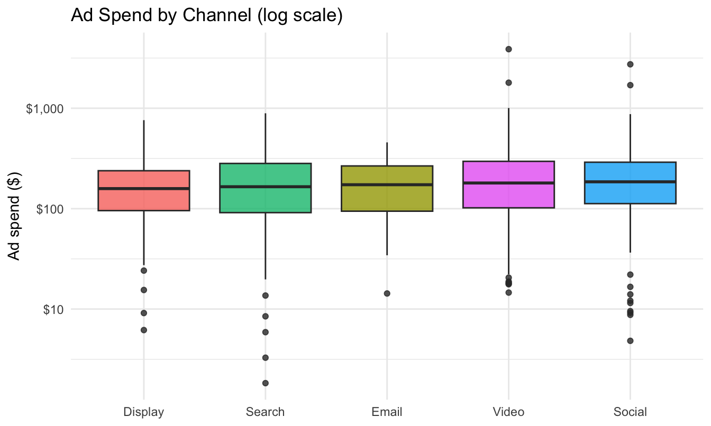
- The medians are almost the same: the typical customer gets the same spend in every channel
- The differences are in the tails: Video and Social have more high-spend outliers. An average would say “Video spends more”. The boxplot says “Video spends more on a few customers”. A different conclusion
Two Categorical Variables
Channel and device: how many customers in each cell?

A heatmap: color = count, number on top. What do you see?
Counts heatmap: reading it
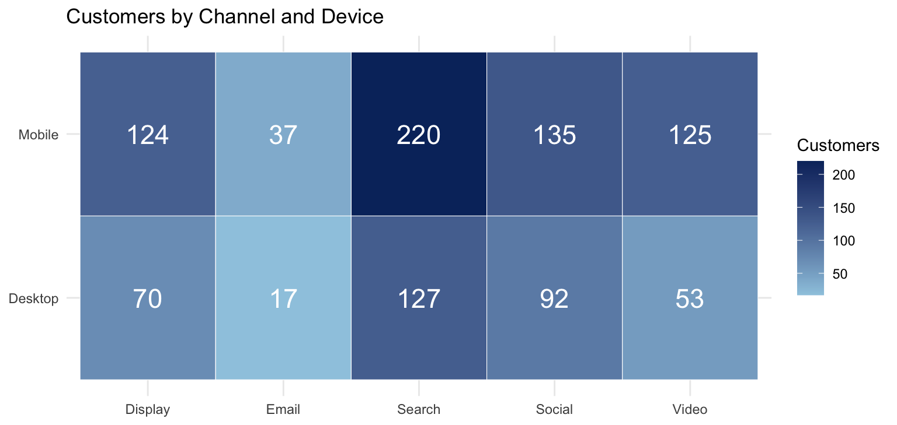
- Mobile is the majority in every channel (65% overall)
- Video is the most mobile-heavy (125 vs. 53): video ads show up where people watch video
- A heatmap is just a table with color. For two categorical variables, that is usually all you need
Add a third variable: average ad spend per cell

Same grid, the color is now the average spend in the cell. Anything stand out?
Spend heatmap: reading it, and the EDA loop
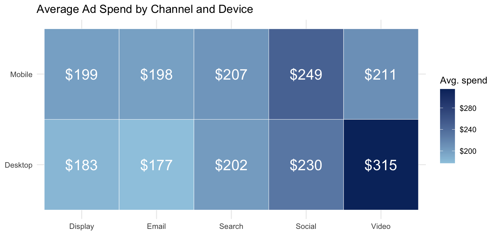
- Video / Desktop at $315 is far above every other cell. Is it a real pattern, or a few outliers in a cell with only 53 customers?
- To find out, go back and make a boxplot of that cell (it is in the class script). This is the EDA loop: notice → ask → check → refine
Correlation Is Not Causation
Does ad spend cause sales?
Sales and ad spend move together strongly (\(r = 0.87\)). Three stories fit that fact:
- Spend causes sales: the ads work
- Sales cause spend: managers set budgets as a share of expected sales, so big markets get big budgets and big sales
- Something else causes both: the holiday season raises spend and sales at the same time
EDA can show you that two variables move together. It cannot tell you why. Weeks 11–12 are about telling these stories apart.
Until then, choose your words carefully: “spend is associated with sales”, not “spend drives sales”.
The RateBeer Case
The case
Thursday you get 292,680 beer reviews from RateBeer (a beer-review site, now closed), 2000–2012: beer, brewery, style, alcohol content, five ratings, and a date.
The client: a new craft brewery deciding which styles to brew and how many.
Two things make this harder than last week:
- The data is dirty: ratings stored as text like
"14/20", alcohol content with"-"for missing, dates stored as numbers, ciders and sake mixed in with the beers. Finding the problems is your job; fixing them is the AI’s - The questions are about covariation: rating by style, rating vs. alcohol, number of styles vs. rating, and how all of this changes over time
How the case works
The handout (w3-ratebeer-case.html) works like the variation case, with less help:
- Tasks 1–3 (look, find the problems, clean): an exact prompt, then prompts with blanks
- Tasks 4–8 (variation warm-up, four covariation questions, time): only the goal, you write the prompt
- Task 9: three recommendations to the brewery, each backed by a number
Under every task: predict before you run, explain back one line after.
Two sessions: Thursday Tasks 1–6, Tuesday, Sept. 15 Tasks 7–9 and the debrief. Deliverable, same as last week: an R Markdown report knitted to HTML plus ai-log.md, due Sunday, Sept. 20.
Bring your laptop with the week 1 setup working. Download the data (ratebeer-case-data.zip, 5 MB) before class.
Wrap-up
Code and data to reproduce today’s charts, on the course website:
w3-code.zip: one-click download of everything beloww3-1-eda-covariation-class.R: every chart shown todaydata/marketing_eda.csv: the case dataset from week 2- The RateBeer case handout and its data
Required reading: Chapter 7 of R for Data Science (the covariation section). Optional: Chapters 3–5 of R for Marketing Research and Analytics.
Questions?
MKT 566 · Marketing Analytics